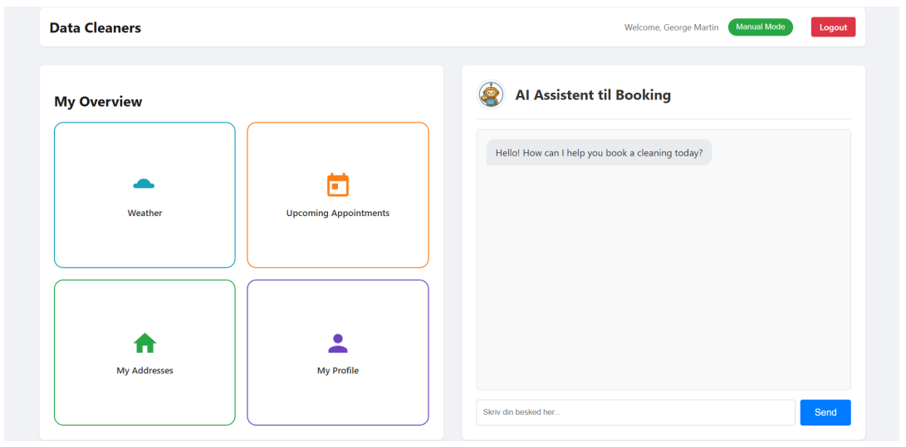

Role: Designer
Context: 9th-semester project (DAD9-P9) at Aalborg University (AAU) / Supervisor: Ilhan Aslan
Duration: September 2, 2025 – December 22, 2025 (fall, 2025)
Elevator Pitch: This project investigates the potential and limitations of automating manual appointment coordination for a hypothetical cleaning service company called Unit Cleaning. By transitioning from an initial Streamlit-based digitisation prototype to an advanced Flask-backed system driven by Agentic Artificial Intelligence (AAI), the project explores how conversational agents can reduce administrative overhead and streamline user workflows.

The Challenge: Unit Cleaning relied heavily on manual processes for managing customer information, scheduling, and sending appointment reminders, leading to inconsistent timing, high rates of missed appointments, administrative bottlenecks, and zero business scalability.
Target Audience & Stakeholders: Built for private customers (who interact directly with the system for self-service booking) and administrative staff/cleaning employees of Unit Cleaning.
Development Process: Iterative Agile Software Engineering combining Scrum (Product Backlog, Sprints, Daily Scrums) and eXtreme Programming (XP) practices like pair programming.
Analysis & Research: Utilized FACTOR criteria, Entity Relationship (ER) diagrams, rich pictures, system contexts, mini-world modeling, user stories based on specific personas (Jonas, Anna & Mikkel), use cases, and Heuristic Evaluations based on Jakob Nielsen's usability principles.
Tech Stack: Python, Flask, MySQL database, HTML/CSS, JavaScript, and OpenAI's tool-calling interface (leveraging GPT models).
Tools & Architecture: Layered Architecture Pattern (Interface, Backend, External) integrating external APIs such as Google Calendar OAuth 2.0 and the Danish Meteorological Institute (DMI) weather service.
Hybrid Interface combining conversational AI-agent chatbot window with supporting UI widgets and relational MySQL database schema.
Impact & Feedback: Case partner feedback highlighted intuitive AI booking features and personalized RAG utilization, while Heuristic Evaluations revealed usability issues concerning AI expectations, user trust, system visibility status, and information overload.
Personal Takeaways: Concluded that conversational automation requires a hybrid interface to balance AI flexibility with structured visual elements, keeping the user in control and mitigating cognitive load and context loss.